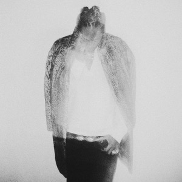
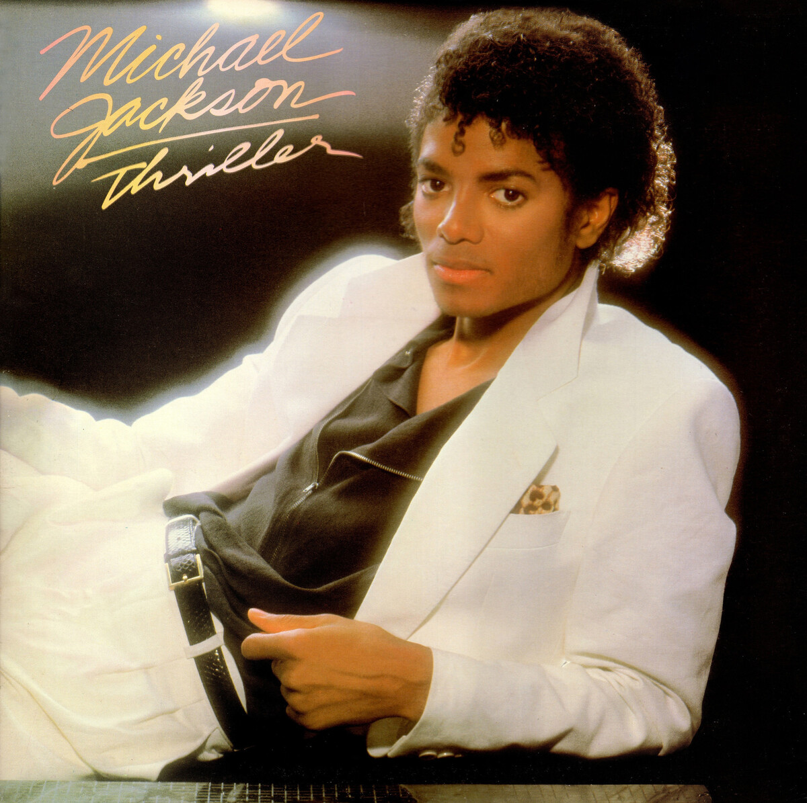

Favorite Music Albums
This is my curated collection of things that I love. Each item here represents something meaningful to me, whether it's a favorite book, game, album, rock, mineral, tool, art, or memory. This collection showcases how responsive design allows me to adapt my content across all screen sizes.

My Beautiful Dark Twisted Fantasy
Album | 2010 | Hip Hop
Often cited as a masterpiece of modern production, this album represents a turning point in artistry. The layered sounds and bold storytelling make it an essential part of my music library.

Blonde
Album | 2016 | R&B / Soul
This album is pure emotional depth. It captures fleeting moments and nostalgia in a way that feels both deeply personal and universal. It's my go-to for quiet reflection.

Off the Wall
Album | 1979 | Pop / Disco
An absolute classic that never gets old. The production quality and energy behind every track still define the gold standard for pop music. It always puts me in a better mood.

Trilogy
Album | 2012 | R&B
This collection defined a whole era of sound for me. Its dark, atmospheric production and raw lyrics created a unique sonic landscape that I still revisit constantly.
Confessions
Album | 2004 | R&B
A quintessential R&B album that feels like a time capsule. The vocal performances and the storytelling throughout the tracklist make it a legendary project in my collection.

Graduation
Album | 2007 | Hip Hop
With its optimistic production and iconic synth-heavy beats, this album feels like a celebration. It brings back great memories and remains a high-energy staple for me.